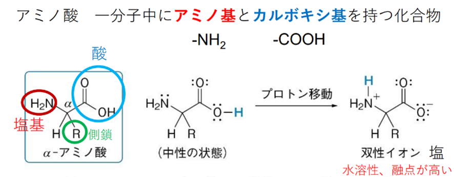
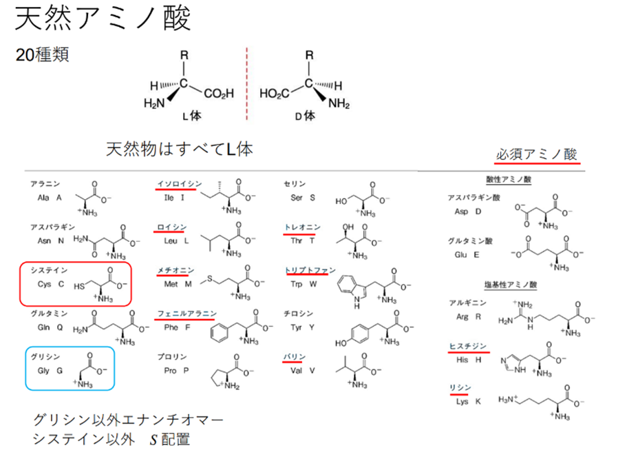
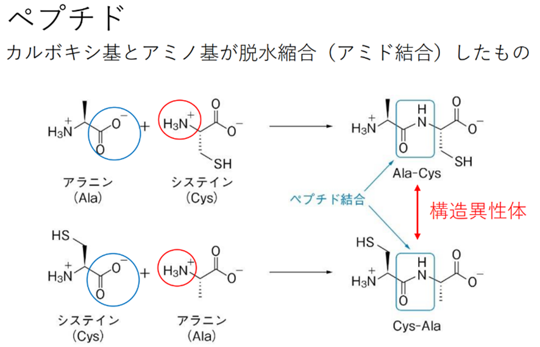
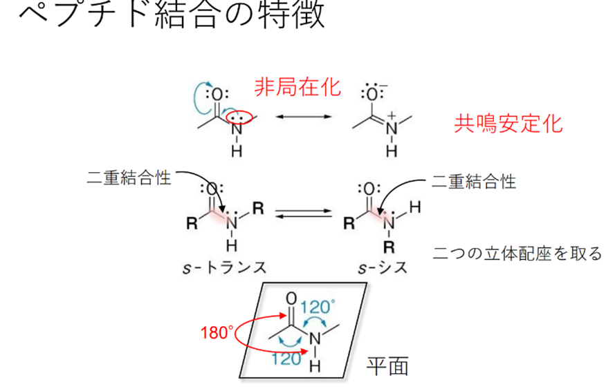
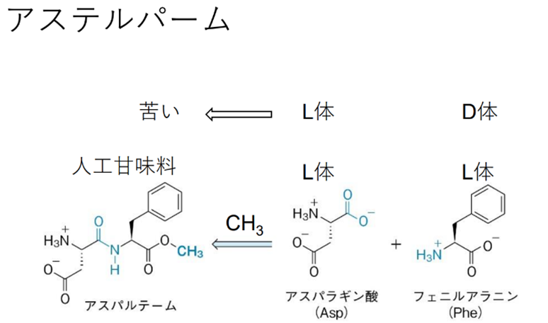
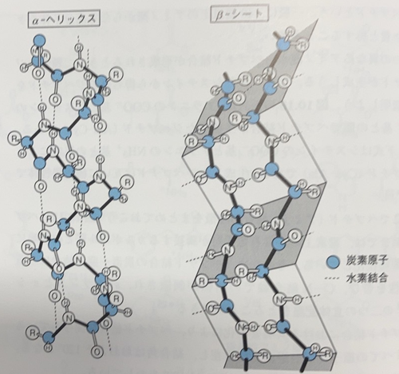

🔹アミノ酸
一分子中にアミノ基(-NH2)とカルボキシ基(-COOH)をもつ化合物をアミノ酸といい、これら二つの官能基が同じ炭素原子(α炭素)に結合したものをα-アミノ酸という。天然には20種類のα-アミノ酸が存在し、α炭素に結合した置換基Rによって区別される。この置換基Rをアミノ酸の側鎖という。
アミノ酸はアミノ基とカルボキシ基をあわせもつ化合物であることから、塩基としても酸としても機能する。そのため、アミノ酸は電荷をもたない中性の状態ではなく、酸性のカルボキシ基から塩基性のアミノ酸は電荷をもたない中性の状態ではなく、酸性のカルボキシ基から塩基性のアミノ基にプロトンが移動した双性イオンと呼ばれる塩の状態で存在している。(図10.14右)。塩として存在するアミノ酸は高い融点をもち、水に溶けやすい性質をもつ。
グリシンは最も単純なアミノ酸であり、側鎖Rは水素である。側鎖が水素以外の場合、α炭素は立体中心となり、二つのエナンチオマーが存在しうる。天然に存在するアミノ酸のうち、側鎖がCH2SHの場合(システイン)を除き、α炭素の立体中心はS配置をもつ。古い命名法では、天然に存在するアミノ酸のエナンチオマーをL体として、非天然のエナンチオマーをD体として区別している。すべてのアミノ酸はアルファベットの3文字または1文字で省略表記される。例えば、グリシンはGlyまたはGと略記される。側鎖にカルボキシ基あるいはアミノ基をもつアミノ酸を、それぞれ酸性アミノ酸および塩基性アミノ酸という。20種類の天然アミノ酸の構造と略号の一覧を下図に示す。
一つのアミノ酸のカルボキシ基が別のアミノ酸のアミノ基と脱水縮合してできた化合物をペプチドといい、このときに生じたアミド結合(-CONH-)を特にペプチド結合という。二分子のアミノ酸から得られるペプチドをジペプチド、三分子からなるものを取りペプチド、多数からなるものをポリペプチドという。一般に、40個以上のアミノ酸からなる高分子体をタンパク質と称することが多い。
 二つの異なるアミノ酸からペプチド結合が形成されるとき、二種類のジペプチドが生成しうる。アラニンとシステインから得られるジペプチドをペプチドが生成しうる。アラニンとシステインから得られるジペプチドを例に説明しよう。図10.16の上式は、アラニンのCOO―基とシステインのNH3+基との間でペプチド結合が生成したジペプチド(Ala-Cys)である。一方、下式はシステインのCOO―基とアラニンのNH3+基との反応によるジペプチド(Ala-Cys)である。生成したジペプチドは互いに構造異性体である。
ここでペプチド(アミド)結合の特徴をまとめておこう(図10.17)。ペプチド結合では、窒素上の非共有原子対が隣接するカルボニル基との共鳴により非局在化している。そのため、ペプチド結合の炭素-窒素結合は二重結合性を帯び、C-N結合軸での回転が制限され、s-トランスとs-シスの二つの立体配座をとることができる。
ペプチド結合における共鳴安定化により、ペプチド結合に関与している6個すべての原子は同一平面上に存在し、結合角はおおよそ120°となる。さらに、C=OおよびN-H結合は互いに180°をなしている。
前節で紹介した人工甘味料であるアスパルテームは、アスパラギン酸とフェニルアラニンのジペプチド(Asp-Phe)のメチルエステルである(図10.18)。アスパルテームを構成している二つのアミノ酸はどちらも天然のL-立体配置である。どちらか一方のアミノ酸をD体で置き換えると、その化合物は苦くなることが知られている。
🔹タンパク質
タンパク質はアミノ酸からなる高分子化合物であり、生きた細胞の構造や多くの機能を担っている。タンパク質の構造について紹介しよう。
タンパク質の一次構造とは、ペプチド結合で互いにつながったアミノ酸の配列を指す。上に記したようにペプチド (アミド) 結合部分の回転は制限 されているが、そのほかの結合は自由に回転することにより安定な配座をとることができる。そのため、ペプチド鎖はねじれたり曲がったりして様々な配座をとれるので、その結果、タンパク質の二次構造が構成される。
タンパク質の局所的な領域の三次元立体配座を二次構造という。 二次構造の形成には、一つのアミド結合のN-Hのプロトンと、別のアミド結合のC=Oの酸素との間の水素結合が関与する。これらの水素結合には、特に安定な二つの構造があり、それぞれα-ヘリックスとβ-シートと呼ばれる。
α-ヘリックスは,ペプチド鎖が右巻き(時計回り)のらせんを形成するようにねじれることにより形成される。ヘリックスはアミノ酸3.6残基ごとに1回転し,4残基離れたN-HとC=O間で水素結合が形成されている。すべてのアミノ酸がa-ヘリックスを形成できるわけではない。例えば、プロリンは窒素原子が5員環に組み込まれた剛直な構造をもち、さらに水素結合を形成するためのN-Hプロトンをもたないため、α-へ リックスを構成する要素になることができない。
B-シートは、二つ以上のペプチド鎖が隣り合って列をなし、異なるペプチド鎖の間で水素結合が形成されることによってシート状のタンパク質となる。そのため、アラニンやグリシンのような、側鎖が立体的に小さい場合によく見られる。側鎖が大きくなると立体障害のために鎖どうしが接近しにくくなり、安定なシート構造を形成できなくなる。
実際のタンパク質では、二次構造以外にも,側鎖どうしの相互作用により折りたたまれた特有の立体構造をもつものが多い。このような構造を三次構造という。さらに、三次構造を形成したタンパク質のいくつかが集合して形成された複合体の形状を四次構造という。